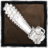
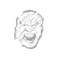
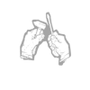

O CAIPIRA
O som da partida de motor acompanhado de um grito de fúria sanguinária.
O Caipira não é lá muito sutil, mas ele compensa com sua eficiência brutal. Capaz de se deslocar por grandes distâncias bem rápido, os que estiverem em seu caminho acabarão topando com as lâminas rascantes da motosserra.
Raio de Terror: 32m
Velocidade: 4.6 m/s
Altura: Alto
Poder:
A Motosserra

Dê partida na arma para começar uma Corrida com a Motosserra e se deslocar a velocidades exorbitantes. Acerte um Sobrevivente com a Corrida com a Motosserra para derrubá-lo imediatamente, mas cuidado: o motor pode superaquecer se usado sem pensar.
VANTAGENS
Resistência |
Fique resistente à dor. Recupere-se depressa de atordoamentos com barricadas e aguente a pressão numa perseguição. |
Nascido na Luz |
Fique completamente imune ao efeito cegante de Lanternas, Granadas de Luz e Minas Explosivas. Ideal para pegar Sobreviventes com lanternas de surpresa. |
Aprimorador |
Receba um aviso quando um gerador fica quase concluído. Ao acionar Aprimorador, fique indetectável, o Raio de Terror e a Luz Vermelha se desativam por um tempo, possibilitando que você pegue Sobreviventes de surpresa. |